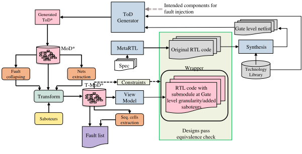
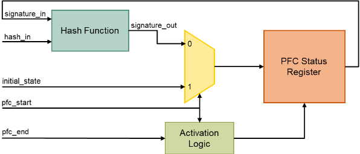
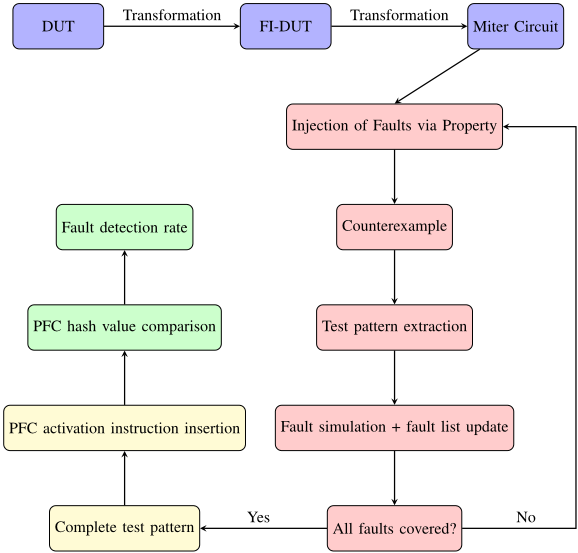
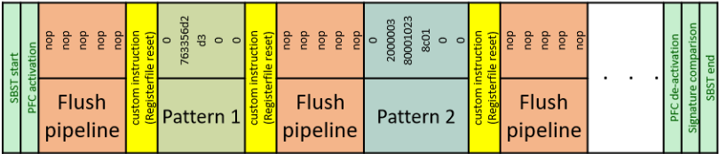

基于形式验证与故障注入方法的自动测试图形生成
针对安全关键 SoC 在生命周期各阶段（含 in-field）的可靠性测试需求，论文提出一条全自动的 SBST 测试图形生成流程，以解决传统 ATPG 工具难以处理大型时序电路、scan 结构面积与性能代价高的问题。方法上，作者用 MetaFI 对 MetaRISCV 生成的 RISCV CPU 做故障注入变换（故障折叠、插入 saboteur、混合粒度 GL/RTL 并做等价检查），将 golden DUT 与故障 DUT 连成 miter，以 assume/prove 属性驱动 OneSpin 360 形式工具，用 counterexample 的输入序列作为测试图形，再用 Xcelium 穷举故障仿真做 fault dropping 与 detectable/undetectable 分类，并以硬件 PFC（CRC 哈希）模块作为在线故障检测机制。在 RV32IMC CPU 的 ALU、Register File、Decoder、HDU、Mem-WB 流水寄存器上，多数组件故障覆盖率超过 91%（ALU 97.63%、Register File 96.87%），PFC 对多数组件实现 100% 检测率，可支撑 ISO 26262 各 ASIL 等级论证。局限是超时 abort 机制不保证不可检测性证明，且 Decoder、Register File 等组件生成时间较长。
ISO 26262 等安全标准要求对安全关键芯片在包括 in-field 在内的生命周期各阶段保障可靠性；SBST 是符合标准的低成本在役测试手段，但其效果高度依赖测试向量质量，而传统 ATPG 工具难以处理大型时序电路，scan chain 又带来面积、设计 effort 与性能开销。论文要解决的问题是：如何全自动地为 RISCV CPU 生成由合法指令构成、可顺序执行的完整 SBST 测试程序，实现高 stuck-at 故障覆盖，并配套在线故障检测机制以获得可论证的故障检测率。
基于 Model-driven Architecture（Metagen/MetaRTL/MetaRISCV/MetaFI）的全自动 SBST 生成流程：(1) MetaFI 将 DUT 的 RTL 经 Yosys 综合为门级网表，提取 net 信息、做故障折叠并插入 saboteur，生成混合粒度（DUT 为 GL、其余为 RTL）的可故障注入设计并做等价性检查；(2) 将 golden DUT 与 FI-DUT 连成 miter，用 SVA property（assume 部分注入故障、prove 部分断言两 DUT 输出相等）交给形式工具，counterexample 的输入序列即测试图形；(3) 脚本自动选取故障、生成 property 文件、运行穷举故障仿真（Xcelium）做 fault dropping，并将故障分类为 detectable/undetectable，超时未找到 counterexample 的故障判为 undetectable 丢弃；(4) 拼接图形时在每个 pattern 前插入 custom CSR 寄存器堆复位指令和 5 条 NOP 以 flush 流水线，防止故障屏蔽；(5) 用 MetaRTL 描述的硬件 PFC 模块（按 CRC 多项式哈希运行时信号值）作为检测机制，由 MetaRISCV 自动实例化到任意信号并自动生成 start/stop/read 的 CSR 指令，最后通过完整 SBST 的穷举故障仿真得到 PFC 检测率。
HDU（111 个故障）：生成 19 条 pattern，故障覆盖率 91.89%，生成时间约 37 分钟
ALU：313 条 pattern 检出 4620 个故障，112 个故障超过 2 分钟时限被 abort，覆盖率 97.63%，生成约 13.6 小时；PFC 监测 ALU 输出可检测全部故障
Register File：492 条 pattern 检出 11747 个故障中的 11379 个，368 个 abort，覆盖率 96.87%，生成约 40.5 小时；两个 PFC 模块可捕获全部故障
Decoder（3224 个故障，其中约 710 个不可检测）：覆盖率 76.3%，总生成时间约 39 小时；检测机制检出约 92.19% 的故障
Mem-WB 流水寄存器（410 个故障）：10 条 pattern 覆盖 225 个 functional faults，生成 8.5 小时；ALU PFC 可检测全部可测故障
总体：多数被测组件故障覆盖率超过 91%，PFC 对多数组件实现 100% 检测率，可对齐 ISO 26262 各 ASIL 等级
相对已有形式验证 TPG 工作（如基于 LTL 的 bounded model checking、unbounded model checker + VCM 约束方法），本文的差异在于：(1) 将 MetaFI 模型驱动的故障注入变换与 miter 式形式 property checking 结合，实现故障粒度的全自动 TPG；(2) 用穷举故障仿真做 fault dropping，减少所需 property 数量并平衡生成时间与覆盖率；(3) 检测机制不限于程序流检查，而是用可挂接到设计中任意信号的硬件 PFC（CRC 哈希）捕获传播到关键观测点的故障，并由 MetaRISCV 框架自动实例化、自动生成 CSR 访问指令；(4) 硬件设置、TPG、图形拼接、故障检测全流程基于 MDA 原则全自动运行。
相关度级别：high
命中能力域：2.1 DFT/ATPG/门级验证 | 2.5 功能安全与安全机制 | 2.6 Fault simulation/Z01X/TFMEA
理由：论文核心是『形式验证生成功能测试图形 + 故障注入 + 穷举故障仿真做 fault grading/dropping + 检测机制检测率评估』的闭环，直接命中 2.6 的核心技术（基于功能 stimulus/pattern 的 fault injection、fault grading 与 detectability 分析），与团队 Z01X 功能图形故障仿真、functional pattern observability 及 TFMEA/FMEDA 论证高度同源；SBST/PFC 作为 ISO 26262 in-field 安全机制、检测率对齐 ASIL，命中 2.5 的安全机制设计与 diagnostic coverage 论证；stuck-at 故障模型覆盖、fault classification（detectable/undetectable/aborted）与故障注入变换后的等价性检查与 2.1 的 fault coverage/classification/等价检查能力相通。需注意：论文面向含 CPU 的处理器 SBST，团队产品为存储/互连 IP，scan ATPG 仍是主线，故价值主要在方法论与安全论证层面，而非直接替代现有 scan 流程。
建议动作：深入精读并做内部分享
Jad Al Halabi ∗† , Endri Kaja ∗† , Wolfgang Ecker ∗‡
用于安全关键应用的片上系统（System on Chips, SoCs）需要达到最高级别的功能安全水平，并遵循可靠性标准，以保障人类生命的安全。因此，在芯片生命周期的各个阶段（包括现场测试）确保芯片可靠性的需求日益增长。基于软件的自测试（Software-Based Self-Test, SBST）是一种测试方法，它利用处理器可用的资源，通过执行测试程序来测试芯片本身。在本文中，我们提出了一种面向 SBST 的自动测试向量生成流程，该流程结合形式化验证与故障仿真来生成测试向量，以测试 RISCV CPU 中的固定0（stuck-at-0）和固定1（stuck-at-1）故障，并通过基于程序流检查的故障检测机制来检测这些故障。我们提出的方法已在 RISCV CPU 的多个组件上成功测试，在保持可接受的向量生成时间以及较低的面积和性能开销的同时，实现了较高的故障覆盖率和检测率。
现代微处理器日益增长的复杂度和规模给确保其功能安全带来了重大挑战。这些挑战包括制造过程中的缺陷和物理损伤，以及更小的晶体管对噪声和环境因素敏感性的提高。诸如 ISO 26262 等全球安全标准定义了汽车行业的系统级安全要求，并倡导在结构性安全方法之外实施信息冗余技术，以针对意外的系统行为提供一定程度的容错能力。为了评估和增强这些安全机制的作用，该标准建议使用故障注入和故障仿真技术来有意地激活故障，并观察被测设计（Design Under Test, DUT）在故障状态下的运行情况 [1]。
为了应对日益增长的设计规模，需要高度自动化。模型驱动架构（MDA）在软件和硬件开发领域已得到广泛探索，其做法是使用抽象表示（模型）通过中间变换生成目标语言的代码。Metagen 是英飞凌（Infineon）基于元模型的代码生成自动化框架，它提升了设计生产率和质量，并显著缩短了交付周期 [2]。系统规范被捕获于元模型中，并据此生成用于修改模型的应用程序接口（APIs）。这些 API 在 Python 代码中被用于对模型进行变换，且变换方式可确保与原始模型（进而与规范）的一致性。MetaRTL [3] 是一个专有框架，可从顶层元模型规范生成寄存器传输级（RTL）描述。MetaRISCV [4] 是 MetaRTL 框架的扩展，它提供了一种简便的方式来实例化和配置使用 MetaRTL 开发的组件，从而使开发人员能够生成具有不同配置的 RISCV 处理器。
MetaFI [5] 是另一个基于 Metagen 的框架，用于向 DUT 注入故障并生成故障仿真测试平台，以执行不同的故障注入实验与分析，包括穷举故障注入（EFI）、统计故障注入（SFI）和直接故障注入（DFI）。该故障注入技术如图 1 所示。原始设计模型（MoD）是故障注入流程的起点，它

被用于通过 MetaRTL 生成设计的 RTL 代码。选定用于故障注入的 DUT 后，由综合工具（例如 Yosys [6]）借助工艺库将 DUT 的 RTL 映射为门级（GL）网表。以该网表作为规范，创建一个 GL 设计模板（ToD），并将该 ToD 转换为 MoD 表示。随后执行一系列变换：从模型中提取电路的线网（net）信息，执行故障折叠以优化故障数量，最后添加破坏者（saboteur）以在 DUT 中启用故障注入能力。在得到变换后的 MoD（T-MoD）之后，将其替换到原始设计 MoD 中，以生成设计的 SystemVerilog 描述。该描述包含具有故障注入能力、以 GL 表示呈现的 DUT，以及处于更高层级 RTL 抽象的设计其余部分。这种混合粒度设计保留了 GL 表示的优点，即仿真过程中高度的可观测性与细节程度，同时通过将设计的其余部分保持在更高的 RTL 表示来克服其性能缺陷。对混合粒度设计与原始设计进行等价性检查，以确保这些变换未影响 DUT 的功能。
设计安全的另一个重要方面是芯片生产后的测试，而现场测试的需求正日益增长。一种符合 ISO 26262 标准且经济高效的方法是基于软件的自测试（Software-Based Self-Test, SBST）方法，该方法由芯片以电路速度执行一系列指令，以检测基于 CPU 的设计中的故障。SBST 的有效性通过故障覆盖率指标来体现，该指标在很大程度上取决于自动测试向量生成（ATPG）工具所生成的测试向量的质量。ATPG 工具难以针对大型时序电路生成测试模式。扫描链通过提供将任意测试向量加载到 DUT 中的基础设施来提高测试过程中的可控性，由于只需考虑组合电路，从而简化了测试模式生成问题。扫描链还用于捕获测试结果，并在故障检测机制中发挥重要作用，但在面积、设计工作量和性能方面的代价高昂。
为了实现现场测试，需要一种故障检测机制来捕获并评估在执行基于软件的自测试（SBST）时是否存在故障。许多硬件故障可能导致程序流执行出现异常，潜在地导致系统发生故障或失效，并在应用中引发安全问题 [7]。程序流检查（PFC）是一种用于识别程序执行中错误的技术，例如指令顺序错误、指令被修改、地址未对齐等。签名（指纹）在编译期间被插入到程序中，并在运行时进行检查。这些签名使用诸如循环冗余校验（CRC）之类的哈希函数生成。流检查的过程包括创建初始签名、通过对当前指令和先前签名进行哈希运算来更新签名，以及通过比较编译时计算的值与运行时计算的值来验证程序流。如果硬件故障影响了程序流，那么两次哈希计算的结果将出现不匹配。
可以使用软件来计算运行时签名，但这一过程会损害处理器的性能。而硬件 PFC 模块则通过在硬件中实现哈希函数，并将哈希后的签名存储在软件可访问的寄存器中来计算运行时签名。
在本文中，PFC 单元被用作故障检测机制，用于检测超出程序流执行范围的故障，并通过对信号值进行哈希运算来涵盖传播到关键观察点的故障。该故障检测机制与一种 SBST 生成技术相辅相成，该技术利用形式化属性检查以及由 MetaFI 引导的故障仿真，来检测由 MetaRISCV 生成的 RISCV CPU 中的故障。
在测试向量生成（TPG）工具中，布尔差分的使用最初并不受青睐，原因在于布尔差分公式的推导与求解十分繁琐 [8]。然而，人们已经开发出实用的技术来解决这一问题。例如，Gurumurthy 等人 [9] 将信号传播需求表达为线性时序逻辑（LTL）公式 [10]，并利用成熟的有界模型检测器来求解该问题 [11]。此外，该工作还展示了针对多种组件超过 90% 功能可测故障的故障覆盖率 [12]。Lingappan 等人 [13] 则提出了另一种方法，利用故障仿真来确定生成的指令序列所能检测的故障数量，并调整求解器设置以优化生成时间和故障覆盖率。
此外，Riefert 等人 [14] 采用无界模型检测器作为 TPG 工具，展示了较高的故障覆盖率，证明了故障的不可测性，并通过启发式方法改善了运行时间。他们还引入了有效性检查模块（VCM）来约束用硬件描述语言（HDL）编写的设计，该模块后来被 Faller 等人 [15] 采用，并增加了一个更高的抽象层，以实现约束在不同处理器核之间的可复用性。这些方法将 VCM 和一个 miter 电路综合为门级表示，从而能够在存在故障和不存在故障的情况下观察被测器件（DUT）的状态。
另一方面，Chen 等人 [16]、Paschalis 等人 [17]、Kranitis 等人 [18] 以及 Gizopoulos 等人 [19] 等研究者提出了多种针对处理器组件的结构测试和基于软件的测试技术，重点在于提高故障覆盖率和测试开发效率。
固定为 0（stuck-at-0）或固定为 1（stuck-at-1）的故障，在特定情况下被激活并将其效应传播到原始输出时，会影响电路的功能。本文所提出技术背后的思想是利用形式化工具来检查故障是否会影响 DUT 的功能。
通过构建一个 miter 结构，可以对正常条件和故障条件下的 DUT 进行并发比较。通过构造如图 2 所示的属性（property），可以利用该属性的 assume 部分注入故障，并利用该属性的 prove 部分断言两个 DUT 的输出完全相同。
如果注入的故障影响了设计的功能，那么形式化工具将会找到一个反例来驳斥该断言，并在此过程中给出导致故障激活和传播的输入序列。
property generate_pattern; @( posedge clk ) disable iff ( rst ) active_fault |-> Normal_DUT.output == Faulty_DUT.output; endproperty
为了将这一概念应用于 RISCV CPU，需要对生成过程加以引导，使其产生一个完整的基于软件的自测试（SBST）程序，该程序由合法指令组成，并且能够顺序执行而不跳过任何指令。这些约束以 assume 属性的形式给出，用于：
本文使用 MetaRTL 描述了一种基于 PFC 的故障检测机制，其硬件框图如图 3 所示。硬件中根据一个 CRC 多项式实现了 CRC 哈希函数，该多项式的参数在 RISCV 生成框架内定义。该函数将运行时信号值（hash in）与 PFC 状态寄存器中的现有值进行哈希运算，并将运行时签名存储在同一寄存器中。
RISCV 生成框架 MetaRISCV 可以在 CPU 的不同位置自动实例化该硬件，以对不同的信号进行哈希运算。该框架会自动引入新的 CSR 地址，用于执行启动、停止和读取运行时哈希值的定制操作。

我们 SBST（基于软件的自测试）方法的可扩展性通过开发一个完全自动化的流程得到支持，该流程涵盖硬件设置、测试向量生成、测试向量拼接以及故障检测。图 4 概述了 SBST 生成流程。

被测器件（DUT）——在本例中为 RISCV CPU——通过 MetaFI 进行故障注入变换。随后，自动生成完整的故障列表和故障仿真测试平台。故障注入后的 DUT（FI-DUT）与原始 DUT 一起被自动实例化到一个包装器中，两者的输入相互连接，从而构成一个可供加载到形式化工具中的 miter 电路。FI-DUT 还与生成的测试平台一起被加载到仿真器中。
故障控制信号被编码在一个宏中以便于自动化，脚本会生成一个属性文件，用于激活从 FI-DUT 故障列表中选出的单个故障。随后脚本启动属性检查，如果找到反例，则提取并保存相应指令。接着启动穷尽的故障仿真，并将生成的测试向量读入仿真。故障仿真的结果（其中包含故障传播信息）被记录到一个文件中，脚本会扫描该文件以对可检测故障进行分类。已检测到的故障从故障列表中移除，并从剩余集合中选择新的故障。如果在可选的时间段内未找到反例，则该故障被视为不可检测，同样从故障列表中剔除。此过程不断迭代，直到设计中的所有故障都被分类为可检测或不可检测。检查超时非常重要，可防止属性检查时间过长，从而在保持良好故障覆盖率的同时，使测试向量生成（TPG）时间保持在合理范围内。
通过拼接提取出的各个测试向量，创建用于测试 DUT 中所有故障的最终 SBST 程序。由于形式化工具假定一个复位状态作为属性检查的初始状态，因此在测试期间有必要复位 CPU 中的不同存储元件（例如寄存器），以防止故障屏蔽。CPU 的寄存器堆经过修改，允许使用定制的 CSR 复位其内容。对于流水线寄存器，可以通过执行若干空操作指令（NOP）来冲刷其内容，从而达到类似效果。因此，自动化脚本通过在每个测试向量执行之前添加所创建的寄存器堆复位指令和 5 条 NOP 指令来拼接测试向量，如图 5 所示。

作为 MetaRISCV 的一项特性，可以将硬件 PFC 组件附加到设计中的任意信号上。PFC 激活指令会被自动添加到 SBST 指令链的顶部，并执行故障仿真以计算每个新增 PFC 的期望 PFC 哈希值。在 SBST 程序的末尾添加去激活和比较指令，用于将期望的 PFC 哈希值与实际运行时值进行比较。
最后，通过对启用了故障检测机制的完整 SBST 进行穷举故障仿真，即可得到 PFC 检测率。
为了评估该方法的有效性，将向量生成流程和 PFC 故障检测机制应用于 RV32IMC RISCV CPU 的多个组件。被测组件包括 ALU、HDU 和 Decoder 等组合逻辑组件，以及寄存器堆和 ME_WB 流水线寄存器等时序组件。所使用的形式化工具为 SiemensEDA 的 OneSpin 360 DV-Verify®，运行于 11th Gen Intel® Core™ i7-1185G7 @3.0GHz 处理器，配备 32 GB 内存。故障仿真使用 Xcelium® 仿真器执行。该流程的主要开发环境为 64 位版本的 RHEL 7。
RISCV CPU 中不同组件的 SBST 流程结果汇总于表 I 中。
| Component | Results.# Fault | Results.# Patterns | Results.# Instructions | Results.DF(%) | Results.PFC DR(%) | Results.Generation time (h) |
|---|---|---|---|---|---|---|
| HDU | 111 | 19 | 266 | 91.89 | 100 | 0.61 |
| ALU | 4732 | 313 | 4382 | 97.63 | 100 | 40.5 |
| Register File | 11747 | 492 | 6888 | 96.86 1 | 100 | 13.6 |
| Decoder | 3224 | 104 | 1456 | 76.3 | 92.19 | 38.87 |
| MEM-WB | 410 | 10 | 140 | 54.8 | 100 | 8.5 |
| Component | Results.# Fault | Results.# Patterns | Results.# Instructions | Results.DF(%) | Results.PFC DR(%) | Results.Generation time (h) |
危险检测单元（HDU）是一个包含 111 个故障的小型组件示例。该流程生成了 19 个测试向量，在约 37 分钟内检测到了总故障的 91.89%。
该流程生成了 313 个测试向量，在约 13.6 小时内成功检测出算术逻辑单元（ALU）中的 4620 个故障。然而，仍有 112 个故障未被检测到，并在超过为每个测试设定的 2 分钟时限后被中止。由此得到的故障覆盖率为 97.63%。PFC 通过对结果进行哈希运算并与预期的无故障参考值进行比较，有效监控 ALU 的输出并检测出所有故障。
SBST 流程生成了 492 个测试向量，在约 40.5 小时内成功检测出 11747 个故障中的 11379 个。仅有 368 个故障被中止，因此被视为未解决。由此得到的故障覆盖率为 96.87%。
由于有两个 PFC 模块对寄存器堆的输出进行监控，因此能够有效捕获所有故障。
译码器共有 3224 个故障。根据先前工作 [20] 的实验结果，译码器包含约 22.02% 的冗余故障，这是由生成框架中的一个缺陷所致。因此，预计 TPG 需要花费更多时间，因为不可检测故障需要由属性在整个超时周期内进行检查。根据一些计算，不可检测故障的数量约为 710 个，如果将属性检查设置为 2 分钟，则该流程将花费 23.7 小时来查找这些不可检测故障。总生成时间约为 39 小时，这表明该过程还可以更加高效。故障覆盖率与上述工作一致，为 76.3%。检测机制还能够检测出约 92.19% 的故障，而其余故障不太可能影响 CPU 的输出，因为这些故障既不影响寄存器堆中的值，也不影响 ALU。
Mem-Wb 流水线寄存器共有 410 个故障。该流程在 8.5 小时的生成时间内生成了 10 个测试向量，用于测试 225 个功能故障。故障覆盖率较低的原因在于检查复杂度的增加。ALU PFC 能够检测出所有可测试的故障。
本文提出了一种为采用 MetaRTL 开发的 RISCV 处理器创建基于软件的自测试（SBST）的自动化方法。所提出的方法采用形式验证技术来生成测试向量，使大多数被测组件获得了超过 91% 的高故障覆盖率。通过结合形式验证与故障仿真，我们执行故障剔除，以将所需属性的数量降至最少。此外，SBST 生成流程集成了一个 PFC 模块，确保大多数组件的故障检测率达到 100%，符合 ISO 26262 标准的多种 ASIL 等级要求。该技术基于 MDA 原理全自动运行。
未来工作：我们旨在将 SBST 技术的应用扩展到 RISCV 处理器之外，以评估其在不同处理器架构上的适应性。此外，该流程存在一些局限性，因为它无法保证故障的不可检测性。通过引入一种生成时间限制来平衡生成时间与故障覆盖率，从而缓解了这些缺点。我们未来的工作包括对各种处理器组件开展更多实验，通过为较易测试的组件集成手工代码来改进测试向量，并通过支持任意寄存器写入来降低属性检查复杂度。